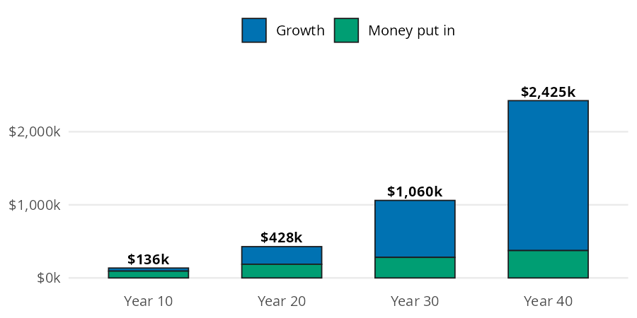
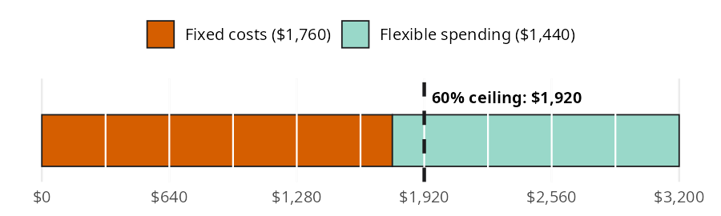
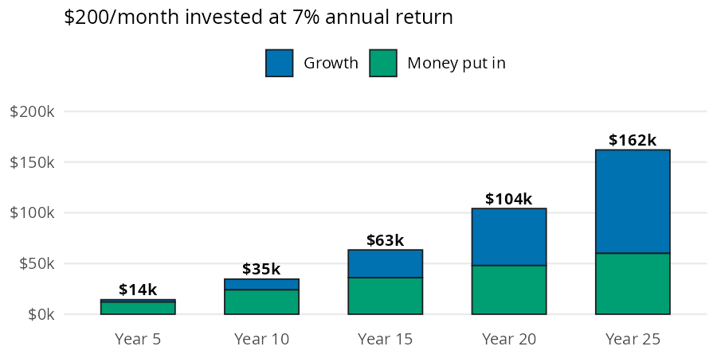

income <- 62400
save_pct <- 0.15
annual_return <- 0.08
wealth_years <- 40A bigger paycheck only builds wealth if some of it stays put. The book’s Income chapter turns that idea into three questions. How much does steady saving grow into? How much of each paycheck is committed before you spend a dollar? And what is a raise worth if you invest part of it? In this vignette I’ll answer each one with perfinr, using the same numbers as the chapter.
| Function | Returns | Units |
|---|---|---|
wealth_formula() |
the balance after saving part of a yearly income every year | dollars; rates go in as decimals |
fixed_cost_ratio() |
monthly fixed costs as a share of take home pay | percent (55, not 0.55) |
raise_invested_value() |
the balance after investing part of a monthly raise every month | dollars; rates go in as decimals |
The units follow the package conventions described in perfinr: rates go in as decimals and ratios come out as percents.
How much does steady saving grow into?
The chapter builds on Scott Galloway’s wealth formula (focus plus stoicism, time, and diversification multiplied together). To put numbers on it, the book uses a worker who earns about the 2025 median for full time workers. This worker saves a fixed share of income every year and invests it. The scenario below sets those inputs:
This worker earns $62,400 a year and saves 15% of it, which comes to $9,360 a year. Those savings earn 8% a year for 40 years. Each bar below is the balance at a checkpoint, split into the money put in and what it grew into.

The green layer rises in a straight line because it is one deposit per year. The blue layer is every deposit growing for the years it has left, and it is the part that takes over. wealth_formula() adds up all of those growing deposits in one call:
wealth_40 <- wealth_formula(
median_income = income,
savings_rate = save_pct,
annual_return = annual_return,
years = wealth_years
)
wealth_40
#> [1] 2424769After 40 years the balance is about $2,424,769. Only $374,400 of that is money the worker put in; the other $2,050,369 is growth.
How much of your paycheck is already spoken for?
Fixed costs (rent, loan payments, insurance, utilities) are the bills you can’t easily change from one month to the next. The book’s example is a first job with these monthly numbers:
fixed_costs <- 1760
take_home <- 3200
ceiling_pct <- 60This paycheck brings in $3,200 of take home pay a month, and $1,760 of it goes to fixed costs. The book suggests keeping fixed costs under 60% of take home pay, which is $1,920 here. The bar below cuts the paycheck into ten equal pieces and marks that ceiling.

fixed_cost_ratio() divides the fixed costs by take home pay and returns a percent:
ratio <- fixed_cost_ratio(fixed_costs = fixed_costs, take_home = take_home)
ratio
#> [1] 55Fixed costs take 55% of this paycheck, under the 60% ceiling. That leaves $160 of room before a new commitment pushes the budget past it. The Budgeting vignette picks up from here and splits the flexible part of the paycheck.
What is a raise really worth?
The chapter recommends splitting every raise: half goes to your lifestyle and half gets invested. The book’s raise adds a fixed amount to monthly take home pay:
raise <- 400
share <- 0.5
raise_rate <- 0.07
raise_years <- 25A raise of $400 a month split in half sends $200 a month into investments. That money earns 7% a year for 25 years. The bars below show the balance at each checkpoint.

raise_invested_value() takes the whole raise and the share you invest, then compounds the contributions monthly:
raise_value <- raise_invested_value(
monthly_raise = raise,
invest_share = share,
rate = raise_rate,
years = raise_years
)
raise_value
#> [1] 162014.3Half of the raise grows to about $162,014. The contributions add up to $60,000, so growth adds about $102,014. The Investing Basics vignette returns to this future value of contributions formula with future_value_series().
Variations
Both growth functions are vectorized, so we can compare options in one call. The savings rate is the stoicism lever in Galloway’s formula. The code below keeps the income, return, and horizon from the first section and changes only the share saved:
rates <- c(0.10, 0.15, 0.20)
data.frame(
savings_rate = rates,
yearly_savings = income * rates,
wealth = wealth_formula(
median_income = income,
savings_rate = rates,
annual_return = annual_return,
years = wealth_years
)
)
#> savings_rate yearly_savings wealth
#> 1 0.10 6240 1616513
#> 2 0.15 9360 2424769
#> 3 0.20 12480 3233025The same idea works for the raise. Here is the $400 raise with a quarter, half, three quarters, and all of it invested:
shares <- c(0.25, 0.50, 0.75, 1)
data.frame(
invest_share = shares,
per_month = raise * shares,
value = raise_invested_value(
monthly_raise = raise,
invest_share = shares,
rate = raise_rate,
years = raise_years
)
)
#> invest_share per_month value
#> 1 0.25 100 81007.17
#> 2 0.50 200 162014.34
#> 3 0.75 300 243021.51
#> 4 1.00 400 324028.68Both tables scale in a straight line with the share saved because the return and horizon don’t change. The horizon is where the curve bends, as the bar models above show.
Limits
wealth_formula()assumes one deposit at the end of every year, the same income every year (no raises), and the same return every year. It ignores taxes, fees, and inflation, so results are in future dollars.raise_invested_value()makes the same assumptions with a deposit at the end of every month and monthly compounding.- A 0% return in either function gives the plain sum of the deposits instead of
NaN.fixed_cost_ratio()stops with an error whentake_homeis 0 or negative. It doesn’t decide which bills count as fixed, and the 60% ceiling is a guideline from the book, not an argument.- The growth functions reject text and
NAbut not negative values, so check the signs of your inputs.
Putting it together
The worker from the fixed cost section gets the $400 raise. Investing half is the easy part; the real question is where the lifestyle half goes. If it stays flexible (dinners, trips), fixed costs don’t change. If it goes to a pricier apartment, fixed costs rise by the full lifestyle half. The code below compares the fixed cost ratio before the raise and under both choices:
new_take_home <- take_home + raise
plans <- data.frame(
plan = c("before the raise", "lifestyle half stays flexible", "lifestyle half goes to rent"),
fixed_costs = c(fixed_costs, fixed_costs, fixed_costs + raise * (1 - share)),
take_home = c(take_home, new_take_home, new_take_home)
)
plans$ratio <- fixed_cost_ratio(
fixed_costs = plans$fixed_costs,
take_home = plans$take_home
)
plans
#> plan fixed_costs take_home ratio
#> 1 before the raise 1760 3200 55.00000
#> 2 lifestyle half stays flexible 1760 3600 48.88889
#> 3 lifestyle half goes to rent 1960 3600 54.44444Keeping the lifestyle half flexible drops the ratio to 48.9%. Moving it into rent leaves the ratio at 54.4%, almost where it started, so the raise buys very little breathing room. This is the lifestyle inflation the chapter warns about: the upgrade becomes a permanent bill.
The invested half grows the same way in both plans. The code below values it twice: once with monthly deposits, and once with a single deposit at the end of each year. The yearly version uses wealth_formula(), whose median_income argument accepts any yearly amount:
monthly_value <- raise_invested_value(
monthly_raise = raise,
invest_share = share,
rate = raise_rate,
years = raise_years
)
yearly_value <- wealth_formula(
median_income = raise * 12,
savings_rate = share,
annual_return = raise_rate,
years = raise_years
)
c(monthly = monthly_value, yearly = yearly_value)
#> monthly yearly
#> 162014.3 151797.7The same dollars come out about $10,217 ahead when they’re invested every month. Each monthly deposit starts growing sooner, which is one more reason to automate the transfer the day the raise arrives.
Recap
wealth_formula() and raise_invested_value() show how a steady deposit turns into a balance that is mostly growth. Time does more of the work than the deposits do. fixed_cost_ratio() tells you how much of each paycheck is committed before you spend anything, and returns a percent you can compare against the 60% ceiling. Together they make the chapter’s advice measurable: keep fixed costs low, and invest part of every raise before your lifestyle absorbs it.
- Income chapter of the book
wealth_formula()fixed_cost_ratio()raise_invested_value()- Next: Tracking Spending